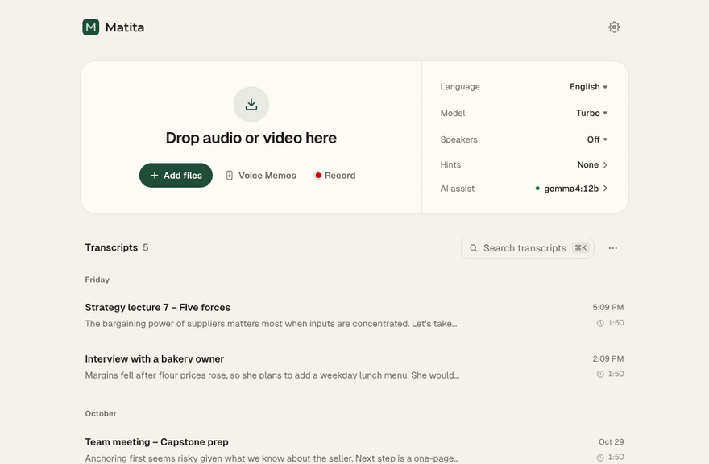
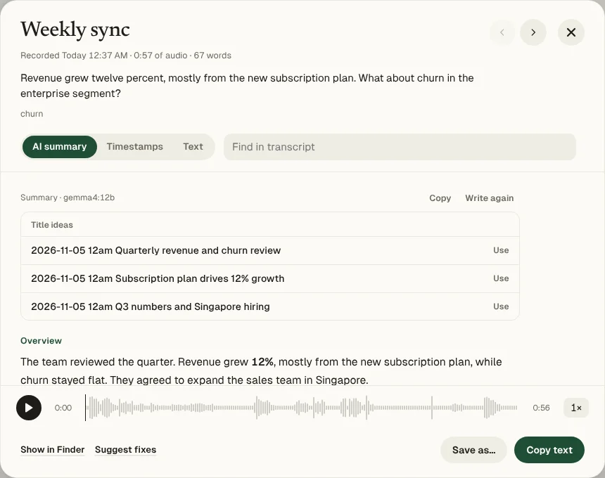
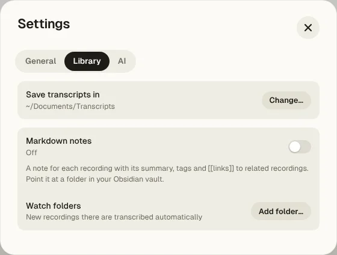

Matita turns lectures, interviews, meetings and calls into transcripts, summaries and notes. Nothing is uploaded, nothing to pay, nothing to sign up for.
Download for Mac
Drop in files, or let Matita pick them up on its own. It transcribes, names who spoke, summarises and files everything as plain files you keep.
Record in class or bring your iPhone Voice Memos. Get the full text, an outline and the key points, searchable across every session.
Each speaker gets a name you can rename. Timestamps jump straight to the moment in the audio. Export to Word, Markdown or subtitles.
Record Zoom, Teams or Meet with the other people included. Summary, action items and three title ideas come with it.


Cloud note-takers are convenient, but your audio lives on their servers. Matita keeps it on your Mac.
| Matita | MacWhisper | Otter / Granola | |
|---|---|---|---|
| Audio processed | On your Mac | On your Mac | On their servers |
| AI summaries | On your Mac (Ollama) or Claude | With an AI service you connect | In their cloud |
| Cost | Free | Free tier, paid Pro | Free tier, subscription |
| Your transcripts | Plain files, Obsidian notes | Exports | Inside their app |
| Open source | Yes | No | No |
Matita isn't signed with a paid Apple Developer ID, so macOS asks you to confirm the first time. It's built in public from the source on GitHub.
Open the .dmg and drag Matita into Applications.
macOS says it can't check the app. Click Done.
System Settings → Privacy & Security, scroll down, click Open Anyway. That's it.
Prefer Terminal? xattr -dr com.apple.quarantine /Applications/Matita.app
Your audio and transcripts don't. Matita goes online only to download speech models the first time, to check for a new version, and, if you choose Claude for summaries, to send a transcript to Anthropic.
About 100 with Whisper, including Korean, Japanese and Chinese. Parakeet, the fastest model, covers English and 24 European languages.
About 100 MB for the app, plus one speech model on first use: 640 MB (Parakeet), 870 MB (Turbo 8-bit) or 1.6 GB (Turbo).
Not this build. Matita needs Apple Silicon (M1 or later) and macOS 14 Sonoma or later. Recording other apps' sound needs macOS 14.2.
Quit Matita and drag it to the Trash. Models are in ~/whisper-models and settings in ~/whisper-app if you want those gone too. Your transcripts stay in your Transcripts folder.